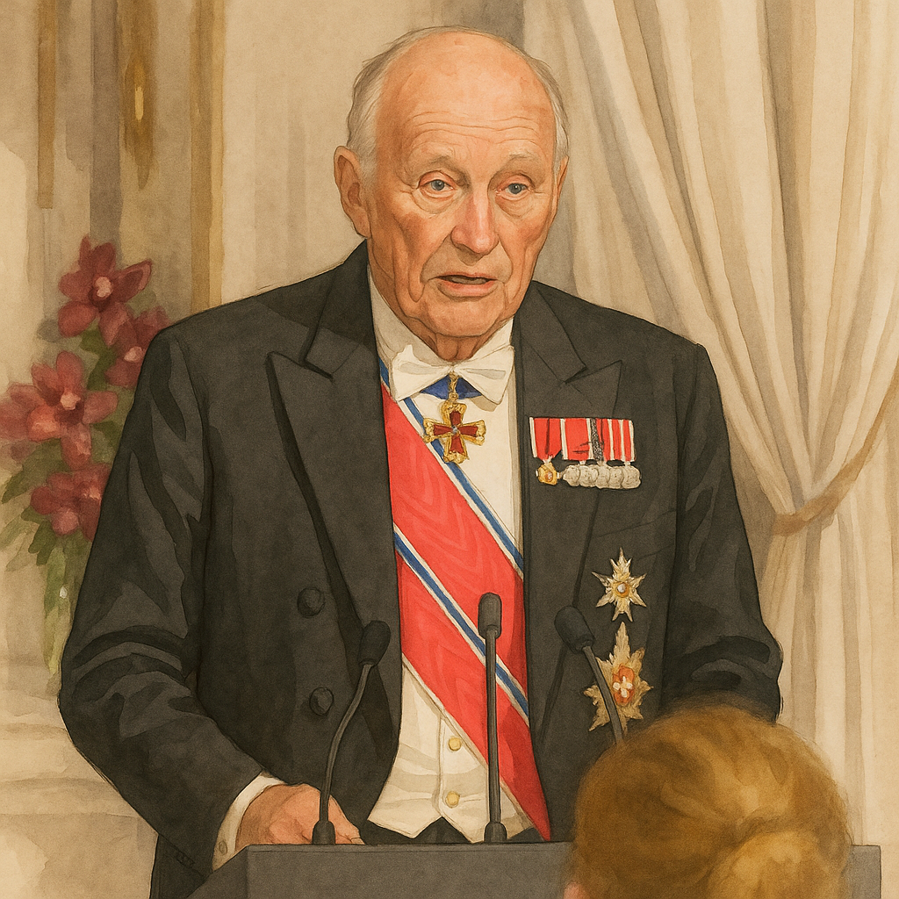

Stortingsmiddagen 2025: Humor, alvor – og tradisjon
Kong Harald åpnet årets Stortingsmiddag med lune stikk til Netflix-dokumentaren om kongefamilien – og avsluttet med et tydelig forsvar for demokrati, ytringsfrihet og rettsstat. Samtidig holdt Slottet fast ved tradisjonen fra 1906: fire retter, norske råvarer og høytid i Store spisesal.
Kongens åpning: «Kongen minutt for minutt»
Da kongen holdt sin tale, gikk han rett til temaet som har opptatt mange denne høsten: den mye omtalte Netflix-dokumentaren Rebel Royals om og med prinsesse Märtha Louise og Durek Verrett.
– Vi har registrert en viss oppmerksomhet rundt en film i høst, og vi har vurdert en oppfølger. Og synes kanskje at «Kongen minutt for minutt» er den beste så langt. Jeg kan ikke love at den blir så svært rebelsk, men tror likevel den kan nå mange siden den også kan fungere som lett søvndyssende, sa han til latter fra salen.
Valg, roller – og en liten tabbe
– Vi registrerer imidlertid at det i valgets hete kan oppstå forvirring om hva man identifiserer seg som – statsminister eller finansminister, sa kongen, med henvisning til en aldri så liten tabbe dagen etter valget.
Tre råd til ferske representanter
– Jeg har hørt at nye representanter får litt tvilsomme råd om skikk og bruk før denne kvelden. Her kommer tre råd fra meg: Ikke ta alt for god fisk, sjekk mer enn én kilde – og ikke drikk av skyllebollene, sa han videre.
Skremt over angrep på demokratiet
Etter humoren ble tonen mer alvorlig. Kongen minnet om at uenighet er en del av demokratiet – og at vi i Norge står samlet om de grunnleggende prinsippene.
– Demokratiet er kanskje ikke perfekt, som det meste annet i livet. Likevel er det nesten litt uvirkelig – ja, skremmende – for oss som lever i det norske folkestyret at demokratiet som styreform ser ut til å bli undergravet og mister tilslutning verden over.
– Vi ønsker at makten skal utgå fra folket, og at alle borgere skal være like for loven. Vi mener at alle skal kunne ytre seg uten frykt – innenfor rettsstatens rammer – og at en fri presse skal sikre åpenhet og kontroll med dem som har makt og posisjoner. Flertallet skal styre, men minoriteters rettigheter skal beskyttes.
Menyen for kvelden
- Potetlompe med røkt ørret – med sikrogn, pepperrotrømme, agurk og syltet rødløk.
- Norsk wagyu – med estragonmajones og kantarell- og soppchips.
- Elg fra Sikkilsdalen – med potet, gresskarpuré, savoykål, grillet purreløk og sennep-, morkel- og sitronsjy.
- Villplomme fra Bygdø Kongsgård – med surdeigsis.
Kronprinsessen tilbake på Slottsmiddag
Flere av gjestene valgte rødt – og kronprinsesse Mette-Marit møtte i rød gallakjole. Hun er i behandling, men Slottsmiddagen har lenge vært planlagt som ett av årets høydepunkter. På hodet bar hun sitt bryllupsdiadem og et armbånd lånt fra prinsesse Ingrid Alexandra – et lite stykke familiehistorie i bruk igjen.
Stortingsmiddagen: Tradisjon og forandring
(Historikk)
Torsdag kveld samles stortingsrepresentantene på Slottet til stortingsmiddag. Det er den 107. i rekken etter at Kong Haakon VII innførte middagen som fast tradisjon.
Kong Haakon startet tradisjonen i 1906, og selskapet har røtter helt tilbake i unionstiden. Siden 1906 har middagen vært en årlig begivenhet – kun med unntak av årene under 2. verdenskrig og i 2020 under koronapandemien.
Fra herreselskap til speilbilde av samfunnet
I 1906 var det bare tre kvinner til stede. I dag er over 40 prosent av representantene kvinner – og i 2018 var både stortingspresident, høyesterettsjustitiarius og statsminister kvinner. Mye er som før, men samfunnet speiles stadig tydeligere i salen.
Rundt 225 personer tar plass i Store spisesal, som pyntes av hoffets blomsterdekoratører. Fire retter serveres av lakeier i livré – helst med råvarer fra norske produsenter, og noe hentet fra Bygdø Kongsgård og Slottsparken. Rytmen og kjernen er uforandret: Kongens tale, Stortingspresidentens svar, og sangene som markerer fellesskapet mellom kongehus og folkets representanter.
(Historikkdelen bygger på tidligere omtale fra Det kongelige hoff.)